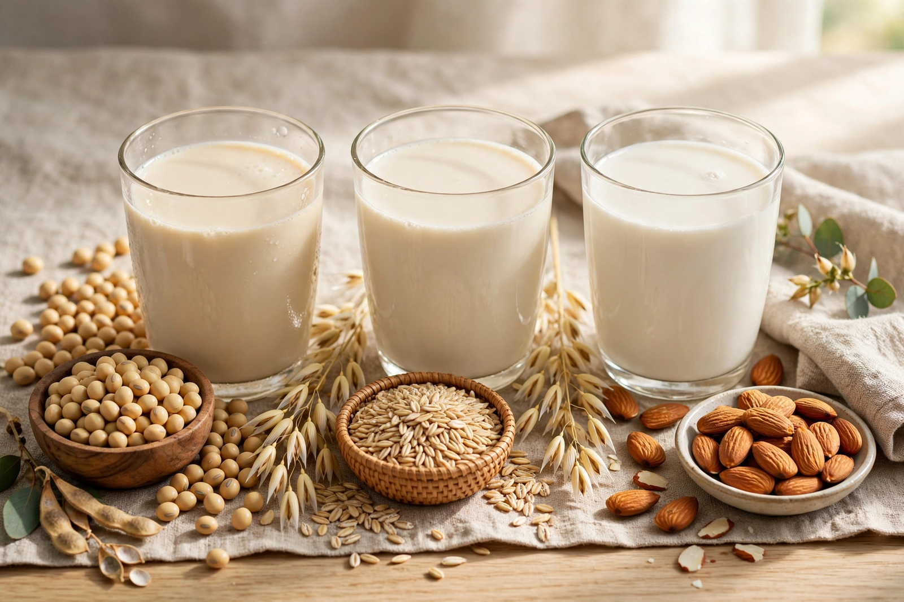

| Plant milk | |
 | |
| Type | Milk substitute, beverage |
|---|---|
| Main varieties | Soy, almond, oat, rice, coconut, pea, hemp, cashew |
| Main ingredients | Water, plant material (legumes, nuts, grains, seeds) |
Plant milk is a plant-derived beverage with a colour and consistency resembling that of mammalian milk. Plant milks are non-dairy beverages made from a water-based plant extract and are consumed as alternatives to milk, including by vegans, people with lactose intolerance or milk allergy, and consumers avoiding dairy for environmental or other reasons. The most common types are almond milk, coconut milk, oat milk, rice milk, and soy milk.
Plant-based milky drinks are ancient. Soy milk has been produced in China for many centuries as both a beverage and the precursor to tofu; almond milk was a staple of medieval European and Middle Eastern cooking, used during Lent and fast days when animal products were forbidden; coconut milk has long been central to South and Southeast Asian cuisines; and grain- and seed-based drinks such as horchata (from tiger nuts, in Spain, and from rice, in Mexico) are centuries old. Commercial plant milks expanded in the twentieth century with soy milk in Asia and the West, and the market grew rapidly in the 2010s as oat milk — praised for its creamy texture and ability to foam in coffee — joined almond and soy on café menus worldwide.
Most plant milks are manufactured by grinding the plant material (beans, nuts, grains) with water, then straining out solids, homogenizing, and heat-treating (often UHT) for shelf stability. Commercial products commonly add emulsifiers, stabilizers, sweeteners, flavours, and fortifying nutrients — calcium, vitamin D, and vitamin B12 — to approximate the nutritional profile of cow's milk. The solid residue of soy milk production, okara, is used in cooking and animal feed.
Nutritionally, plant milks vary widely. Soy and pea milks approach cow's milk in protein content (about 3–3.5%); almond, rice, and oat milks are generally much lower in protein. Unfortified products provide little calcium or vitamin D. Environmental assessments consistently find plant milks have substantially lower greenhouse-gas emissions, land use, and (except almond milk, which is water-intensive) water use than dairy milk per litre.
Whether such drinks may be labelled "milk" is contested. In the European Union, a 2017 Court of Justice ruling held that "milk," "cheese," and similar terms are reserved for animal products, so plant drinks are marketed as "drinks" or "beverages" (with exceptions for traditional names such as coconut milk). In the United States, the Food and Drug Administration has allowed "milk" with a plant qualifier (e.g., "soy milk"), issuing draft guidance in 2023 that endorses the qualified usage while recommending nutrient-difference disclosures. Dairy industries in many countries lobby against the term, while plant-based producers argue consumers are not confused.
See also: Soy milk, Almond milk, Oat milk, Lactose intolerance, Veganism